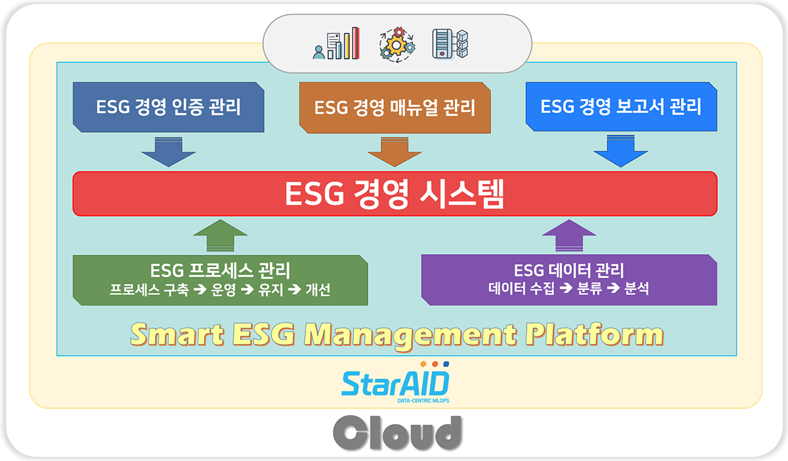

Smart ESG Management Platform
StarAID SEMP
⏱ 2027년 출시 예정(개발중)

StarAID를 활용한 비즈니스 프로세스 기반의 스마트 ESG 경영 플랫폼(SEMP)
조직 내 ESG 경영 프로세스와 데이터를 효율적으로 구축, 운영, 분석 및 개선과 적용하기 위하여 자사의 인공지능 플랫폼 StarAID를 활용한 비즈니스 프로세스 기반의 "스마트 ESG 경영 플랫폼(SEMP)"입니다.
StarAID SEMP는 조직의 경영 효율 개선과 효과적인 경영을 통한 지속 가능 경영 역량 강화에 따른 기업 경쟁력 향상에 기여하는 플랫폼입니다.
주요 기능 및 특징
비즈니스 프로세스와 인공지능 기반의 지능형 ESG 경영 관리 기능
자체 개발한 인공지능 플랫폼인 StarAID를 이용한 스마트 ESG 경영 관리 솔루션
StarAID의 워크플로(workflow) 시스템을 이용한 ESG 프로세스 정의/실행/모니터링/개선 자동화 기능
ESG 경영 관련 인증 관리 기능
StarAID에 탑재된 "LLM(Large Language Model) for ESG"를 이용한, 쉽고 편리한 지능형 ESG 경영 매뉴얼 관리 기능
StarAID를 이용한 ESG 경영 데이터 수집, 저장 및 가공, 분석, 보고서 자동화 기능
ESG 업무 프로세스 실적 관리 및 지능형 통계 분석 기능
기간계(Legacy system) 연계를 위한 개방형 OpenAPI 및 가젯(Gadget)